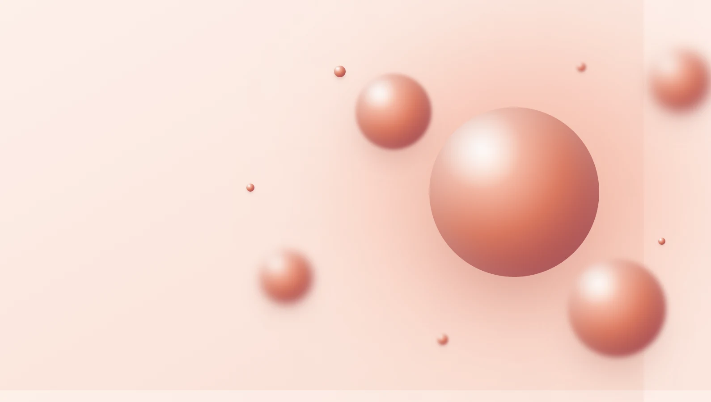
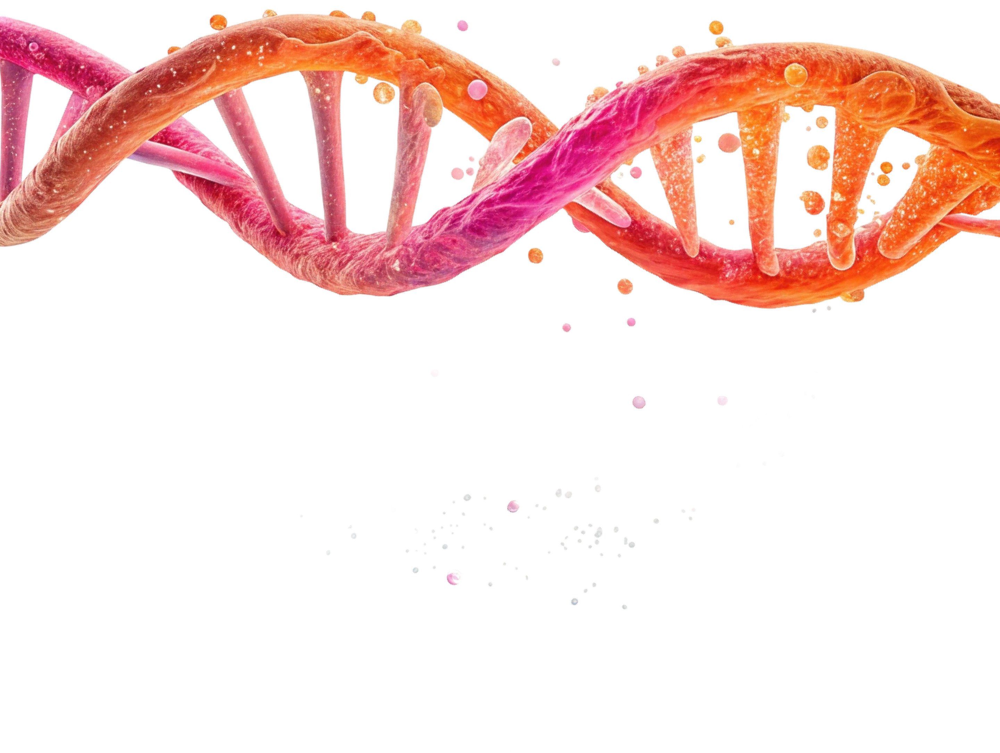
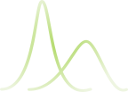
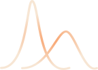
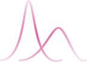
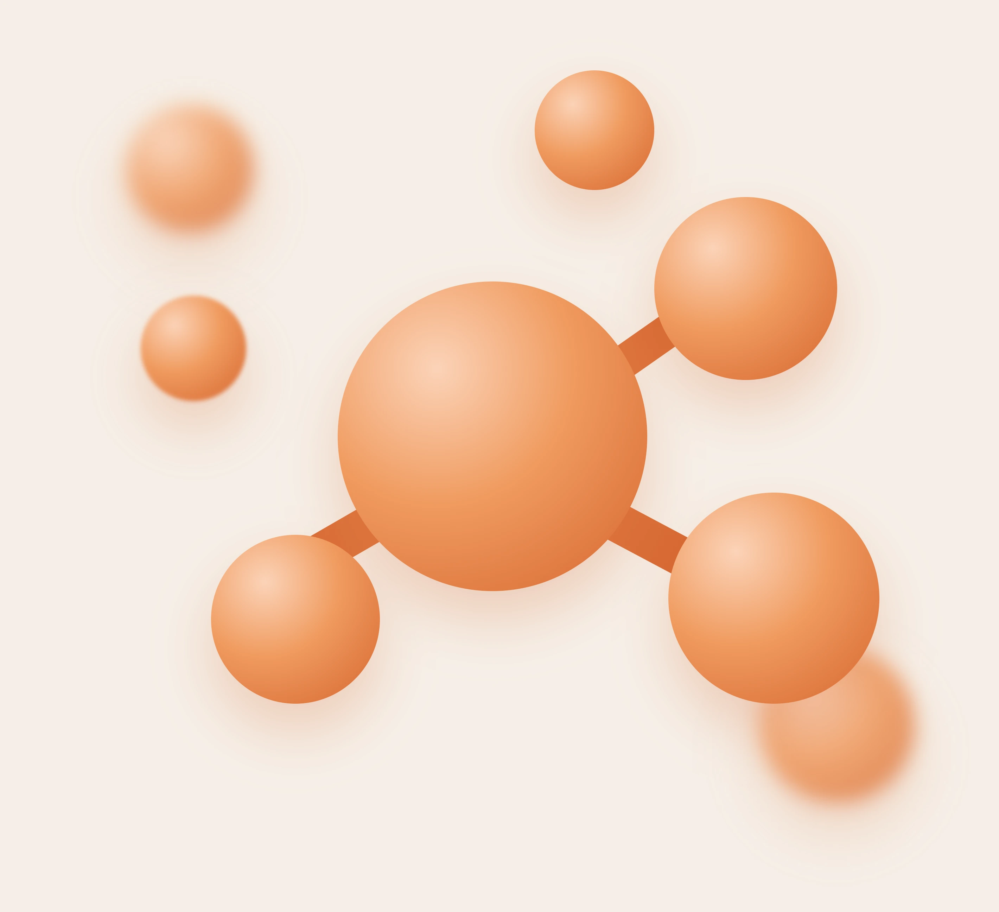
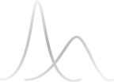

Реабилитация
после инсульта в Сочи
Ранняя профессиональная реабилитация — это возможность вернуть двигательные функции, предотвратить осложнения и восстановить качество жизни.
Позвонить: +7 918 408-70-37Тимофеев Николай Устинович
Сроки начала реабилитации: почему каждый день на счету
Нейропластичность мозга — способность восстанавливать и перестраивать нейронные связи — наиболее высока в первые месяцы после инсульта. Именно в этот период реабилитация дает наилучшие результаты.
Ранний период
До 6 месяцев после инсульта
Наилучший прогноз восстановления. Мозг максимально пластичен — новые нейронные связи формируются активно. Именно в этот период реабилитация дает наиболее выраженные и устойчивые результаты. Начало в этот период — приоритет №1.

Поздний период
От 6 месяцев до 1 года
Восстановление возможно, но требует значительно бо́льших усилий как со стороны специалиста, так и со стороны пациента. Результаты достижимы при условии систематической работы и высокой мотивации.

Остаточные явления
Более 1 года после инсульта
Период остаточных явлений. Нейропластичность существенно снижена. Даже максимальные усилия дают минимальные результаты. Полная реабилитация маловероятна, но поддерживающие занятия необходимы для предотвращения ухудшения.

27 лет
опыта реабилитации, более 700 пациентов прошли восстановление — выезд на дом и в стационар по Сочи

Возможности восстановления в зависимости от тяжести инсульта
Лёгкий инсульт
Высокий потенциал восстановления
- Пациенты способны научиться ходить самостоятельно
- Частичное или полное восстановление речи
- Возврат к бытовой самостоятельности
Срок реабилитации: от 1 до 4 недель
Средне-тяжёлый
Специализированное обучение
- Необходимо специальное обучение двигательным навыкам
- Восстановление ходьбы возможно при систематической работе
- Важны желание и мотивация пациента
Срок реабилитации: от 1 до 3 месяцев

Тяжёлый инсульт
Интенсивное сопровождение
- Без профессионального обучения восстановление невозможно
- Акцент на профилактике осложнений и уходе
- Постепенное восстановление базовых навыков самообслуживания
Срок реабилитации: от 3 месяцев и более
Конкретные сроки и перспективы определяются индивидуально — зависят от навыков реабилитолога и желания/возможностей пациента.
Осложнения: что важно знать
Клинически доказано: Отсутствие своевременной реабилитации или уход за пациентом без медицинских знаний ведёт к развитию тяжёлых вторичных осложнений, часть из которых представляет непосредственную угрозу жизни.
Развивается при длительном пребывании в горизонтальном положении без смены позиции.
Профилактика: Переворачивание каждые 2 часа, дыхательная гимнастика: надувание шарика, сильный выдох, пение, громкая речь
Следствие неподвижности — нарушение венозного кровотока в ногах, риск тромбоэмболии.
Профилактика: Ношение компрессионного трикотажа, пассивная гимнастика конечностей
Возникают при сочетании двух факторов: влажность кожи или постельного белья и длительная неподвижность тела.
Профилактика: Регулярная смена позиции, сухость кожи, противопролежневые матрасы
При отсутствии реабилитационных мероприятий мышцы парализованных конечностей начинают патологически напрягаться — развивается спастика. Это существенно затрудняет последующее восстановление функций и может привести к необратимым контрактурам суставов.
Лечение: Миорелаксанты по назначению врача, специализированные упражнения на расслабление, правильное позиционирование
Афазия — нарушение речи вследствие поражения речевых центров мозга. Важно понимать её формы, чтобы правильно выстроить общение с пациентом.
Моторная афазия
Пациент понимает обращённую речь, но не может произносить слова. Нередко остаётся лишь один «речевой эмбол» — застрявшее слово или слог, которое произносится вместо всех других слов.
Сенсорная афазия
Пациент говорит — порой много, — но речь бессвязна. Он не понимает входящую речь окружающих и не может в словах выразить свои мысли и желания.
Как общаться: Ключ к общению — язык мимики, жестов и интонаций, этот язык понятен даже животным. Используйте простые вопросы с ответом «да/нет», жесты, указывания, рисунки. Говорите медленно, коротко, смотрите в глаза.

Не теряйте время — позвоните сейчас
Врач-реабилитолог Тимофеев Николай Устинович проведёт консультацию и составит индивидуальный план реабилитации.